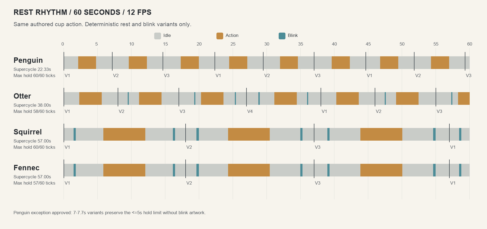

펭귄
깜빡임 원화가 없어 쉬는 시간만 다르게 했습니다. 최대 5초 유지를 지키는 길이 예외를 적용했습니다.
정해진 변형을 순서대로 재생합니다. 잔을 들고 마시는 그림과 속도는 그대로 두고, 앞뒤 쉬는 시간과 눈 깜빡임만 바꿨습니다.
깜빡임 원화가 없어 쉬는 시간만 다르게 했습니다. 최대 5초 유지를 지키는 길이 예외를 적용했습니다.
눈 깜빡임 0 → 1 → 2 → 2회와 위치가 달라집니다.
눈 깜빡임은 2회씩 유지하고, 위치와 전후 쉬는 시간을 다르게 했습니다.
다람쥐와 같은 리듬 변형을 사용하며 원래 친구별 잔 들기 경로를 유지합니다.

이번 작업은 리듬 변화만 적용했습니다. 다람쥐·사막여우가 마실 때 보이는 원화의 몸 흔들림은 이 브랜치에서 수정하지 않았습니다.